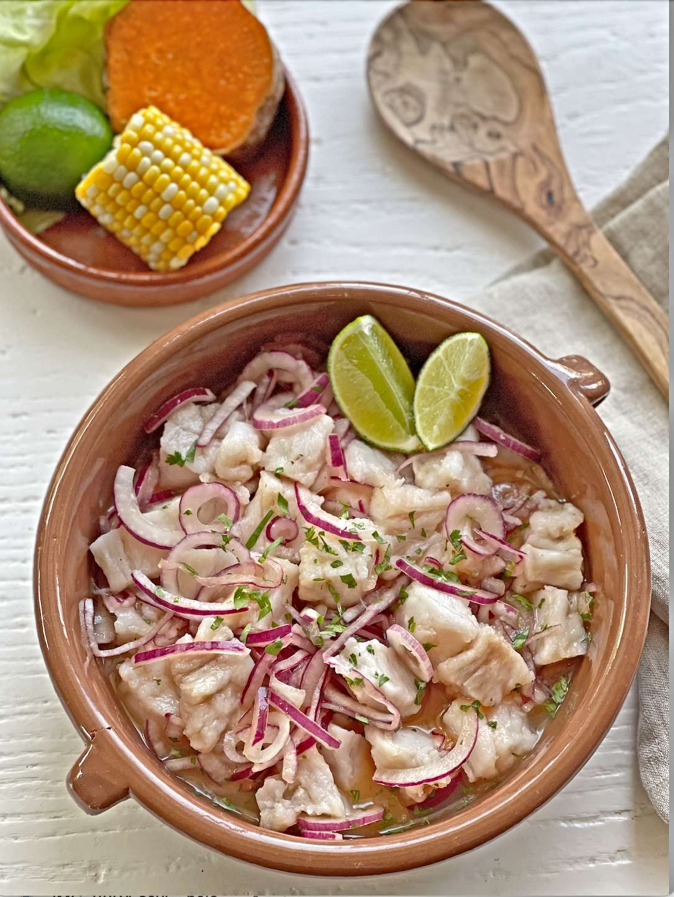
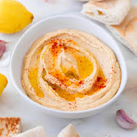
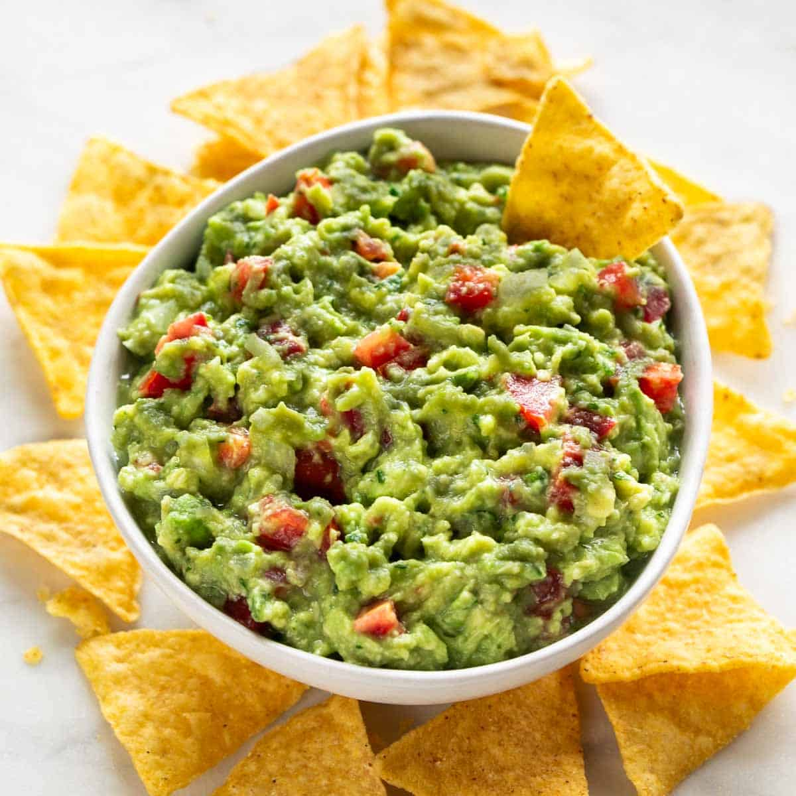

En esta sección encontrarás una variedad de platos fríos para disfrutar en cualquier momento del día.
Desde ensaladas frescas hasta deliciosos postres fríos, tenemos opciones para todos los gustos.


